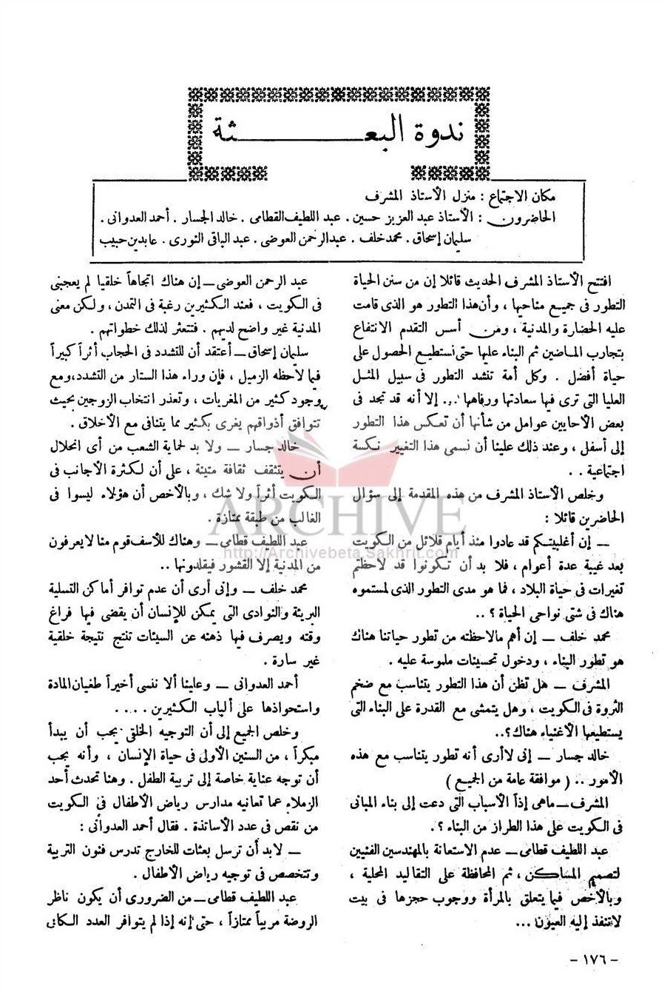

العدد ٨، ١ سبتمبر ١٩٤٨م · صفحات من «البعثة»، نشرة بيت الكويت بمصر، المجموعة الثانية، العدد ٨ (١ سبتمبر ١٩٤٨م)، «ندوة البعثة» بقلم عبدالعزيز حسين، أعاد طباعتها مركز البحوث والدراسات الكويتية ١٩٩٧م، ص ١٧٦ و١٧٧
ندوة البعثة ١٩٤٨: عبداللطيف القطامي عن تطور الكويت
ما هي
ندوة لطلبة كويتيين عادوا قبل أيام من زيارة الكويت بعد غيبة أعوام، في منزل الأستاذ المشرف عبدالعزيز حسين، وبين الحاضرين عبداللطيف قطامي. يقول إن المساكن الجديدة في الكويت لم يستعن فيها بمهندسين فنيين، وحافظت على التقاليد المحلية وخاصة حجز المرأة؛ وإن من الناس من لا يعرف من المدنية إلا القشور؛ وإنه لا بد أن يكون ناظر الروضة مربيا ممتازا يرشد باقي المدرسين؛ وإنه يجب تنظيم شرطة المرور وتدريبها لمواجهة الزيادة المطردة في حركة السيارات.
أهميتها
سجل معاصر لعبداللطيف عبدالوهاب القطامي أحد الطلبة الكويتيين في القاهرة عام ١٩٤٨م، بكلماته.
من المقصود
يذكر فهرس البعثة اسمه كاملا، عبداللطيف عبدالوهاب القطامي، للصفحات ١٧٦ و١٧٧ و١٧٩ من هذه المجموعة.
صور الصفحات


المصادر
عبدالعزيز حسين، «ندوة البعثة»، البعثة، العدد ٨، ١ سبتمبر ١٩٤٨م، أعاد طباعتها مركز البحوث والدراسات الكويتية، الكويت ١٩٩٧م، ص ١٧٦ و١٧٧
كيف كُتب هذا النص: لم يرسل غلاف هذه المجموعة ولا الصفحة ١٧٩ التي يذكرها الفهرس له أيضا.
افتح في الموقع التفاعلي